Politicians VS Citizens.
Are we talking about the same?
The process: How we have done it?
How does the CIS's Barometer work?
Every month 2.500 legal age people are selected randomly and proportional to other variables such as age, sex, population and environment ( more information about the method ).
These people are interviewed personally at home by CIS agents. The result of the surveys is what the barometers show us.
In these barometers we see two blocks of questions. The first one is always the same and the other can change and ask about a recent political or social issue. It is from the first block where we have selected two fixed questions for our study:
¿Cuál es, a su juicio, el principal problema que existe actualmente en España?¿Y el segundo?¿Y el tercero?(RESPUESTA ESPONTÁNEA) -Available since mar'06 
¿Cuáles son, a su juicio, los tres problemas principales que existen actualmente en España?(MÁXIMO TRES RESPUESTAS) -Available from sep'00 to feb'06 
The answers to these two questions are the three main problems that we have in Spain in the opinion of the Spanish Society and they are what we are going to use for our study.
We can find all the barometers in the Data Bank.
How do the Control Sessions to the Government in the Congress of Deputies work?
There are many kinds of session done in the Congress, however we selected the Control Sessions that are taking place every Wednesday. Although they are not defined by the Constitution, they have become very popular over the years and now are ones of the most popular. Is in these sessions where the different political groups can ask the Government and Ministers about the new laws that are in process or recently approved or debate about any issue.
The session diaries are completely available in their web page by a search engine.
You can find more information about how they work in the following link:
"[...] A normal session has a duration of at least 2 hours to debate about the proposed questions and answers. The Control Sessions are taking place on Tuesday afternoon in the Senate and Wednesday morning in the Congress.
The first thing they do is to debate the questions and, afterwards, the speeches. The answer from the government to these second ones makes the asking partie gather the conclussions and prepare proposals. Those will be debated on the next plenary session. [...]"
Source: Asociación de Periodistas Parlamentarios
The Scraping and Cleaning of the data
The Scraping is the process from which we extract the information from the web. In this case we have achieved CIS barometers using its data bank and the Congress diaries using the Search Engine.
For this part of the process we needed Selenium and BeautifulSoup.
CIS
CIS' barometers are available each month. We have selected the period from September, 2000 to February, 2015 because we can find the questions we are looking for each month, excepting in August and exceptionally October,2001 (after 11S).
First, we made an approach using Selenium to know how many barometers we had available with the information that we wanted. It was here when we discovered that we did't have an answer in regular periods to the questions until September, 2000.
Once we realised about it, we downloaded the content of all the barometers with Selenium and using regular expressions with BeautifulSoup we created a database with the results that we kept in MongoDB.
As an answer to each question we had 30 different topics every month, that means that during all the period we found 150 different topics. Most of the topics where similar or related and we decided to group them by clusters. We have 14 clusters clearly identified: Education, Health, Corruption, Environment, Public Services, Ideology, Economy, Employment, Youth, Justice, Social, Terrorism, Housing, Public Safety and Others.
We are going to find more topics or clusters in the Congres' debate however we never thought that the relation of the topics was going to be bidirectional.
The Congress of Deputies
The Congress webpage is generated dynamically. To obtain the list and download the session diaries we used tools from Selenium and BeautifulSoap libraries.
From all the diaries available between September, 2000 and March, 2015 we downloaded the Control Sessions: The ones that are done on Wednesdays and had a questions' section on its agenda.
At the time of analyzing the number of Control Sessions obtained, it should be noted that in the traditional holiday months (January, July and August) there is usually no session control to the government. Also not control session held at election time. Thus, in the legislature changes we found periods of four months without control sessions:
- January-April, 2004 (change of term: from VII to VIII)
- January-April, 2008 (change of term: from VIII to IX)
- October-December, 2011 and January,2012 (change of term: from IX to X)
After downloading all the sessions available we obtained 311 of them.
Journal Sessions Structure
Once obtained the diaries, we proceeded with the structure analysis of them. This process allowed us to extract the desired information: questions, answers, members and parliamentary groups performing in the session.
The content of the journal sessions is a debate around a question or issue previously registered. Questions or inquiries in the Congress are made one week prior the plenary control:
"[...] The agenda of a Government control session in the Congress closes at 8pm of the previous week, although a Presidencial resolution on June, 1996 opened the possibility to replace it until Monday noon by questions concerning to resolutions adopted by the Council of Minister or to particulary topical issues. [...]"
Source: Asociación de Periodistas Parlamentarios .
In this way, every question or issue has a file number that identifies it. All the speeches are literally recorded in the Session Journal pointing the deputy or parliamentary group who made it as we can see in this Journal of March 25th, 2015:
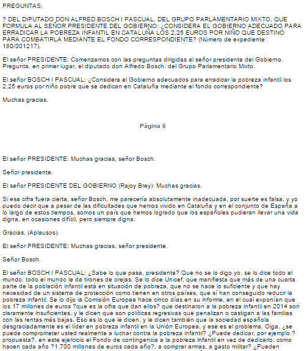
Henceforth, we define a document as a question and interventions (responses) generated and the additional information: date of session journal, deputy or group who asked the question, file number and members who performed every speech.
To identify the Congress members in the speeches and which parliamentary groups they belong it was necessary to obtain the information from the other sections of Congress website. We used again Selenium and BeautifulSoap libraries to scrap lists of deputies, parliamentary groups and legislatures of the periods we were analysing.
List of Congress Deputies
Members is the section of the Congress website where we can find the list of deputies by legislature. For example: listado de diputados de la X Legislatura y su grupo parlamentario .

In all, we found 1374 members in our period.
Parliamentary groups' List
Looking at the Groups tab we can find the list of parliamentary groups of each term. As we can see in: listado de los grupos parlamentarios de la X Legislatura. 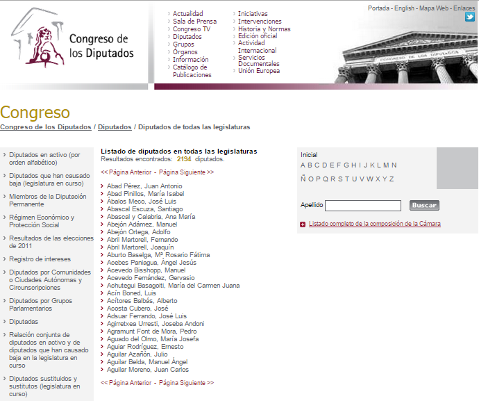
Altogether we have a list of 16 parliamentary groups all along the period. The deputies that belong to the group are linked to the legislature, because it is possible to have changes in the compositions of the groups.
List of Legislatures
Inside Members we can find The Congress from 1977 to 2011 where we can find a list of the legislatures and their periods: List of Legislatures. 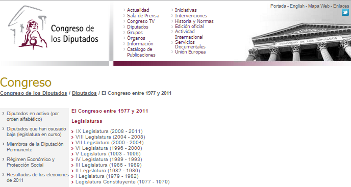
Once we have all the lists we stored in MongoDB to use it in the extraction process
Extraction of questions and speeches
Using regular expressions we are able to analyse line by line the content of a journal tracking the beginning or the end of questions or contributions, deputies, groups, ...
We begin the extraction process when we find the start of the questions, leaving out other sections from the journal that not belong to the questions of the control sessions as "PROPOSICIONES NO DE LEY", "CONVALIDACIÓN O DEROGACIÓN DE REALES DECRETOS-LEYES", "JURAMENTO O PROMESA DE ACATAMIENTO DE LA CONSTITUCIÓN", etc.
The questions' analysis
A session control question has the following structure:
["DEL DIPUTADO", "DE LA DIPUTADA", "DEL GRUPO PARLAMENTARIO", "DE DOÑA"] + [name and surname of the deputy] + [parliamentary group] + ["SOBRE", "RELATIVA A", ... ,":",","] + [question text] + [file number]
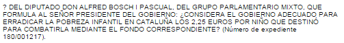
To determine the deputy and the group of each question we sough the coincidence of [name of the deputy] on the deputies' table and the matching with the [political group] in the group table.
Since the registered list of members in the DB is in the format: [[surname],[name]] it has been necessary an algorithm of names and surnames recognition to make the following transformations:
[Alberto Ruiz-Gallardón Jiménez] → [RUIZ-GALLARDÓN JIMÉNEZ], [ALBERTO]
[Jaime Rodríguez-Arana Muñoz] → [RODRÍGUEZ-ARANA MUÑOZ], [JAIME]
We trained the process with the whole list of deputies.
The discussions' analysis
The discussions have one of the following structures in the journals:
- ["El señor", "La señora",...] + [surname of the deputy] + [":"] + [intervention text]
- ["El señor", "La señora",...] + [position in the government] + ([surname of the deputy]) + [":"] + [intervention text]
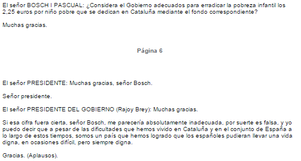
Once detected we do the same process as we have previously seen to determine the deputy, the group and the legislature.
Remarks
The Moderator or the President of the Congress discussions have been deleted since they not provide any interesting content for us. Different elements can act as a start of a question or discussion. That is why we have compiled dictionaries of elements (characters, n-grams of words) which have been trained with the collected documents: Question initiators: ["DEL DIPUTADO", "DE LA DIPUTADA", "DEL GRUPO PARLAMENTARIO", "DE DOÑA", ...]
Connectors within the question: ["SOBRE", "RELATIVA A", ... ,":",","]
Interventions initiators: ["El señor", "La señora",...]In the process of identification of deputies and parliamentary groups against our database we have applied String Metrics to skip frequent transcription errors in the journals as these:
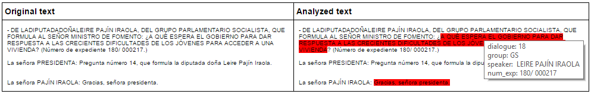 "DE LADIPUTADADOÑALEIRE PAJÍN IRAOLA..." → "LEIRE PAJÍN IRAOLA"
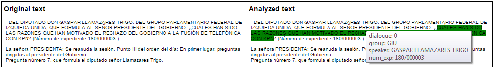 "... GRUPO PARLAMENTARIO FEDERAL DE IZQUIEDA UNIDA..." → "GIU" (Grupo Izquierda Unida)
As a result of the extraction of questions and interventions 7000 documents have been registered in the database.
Examples
Now we show you a couple of examples where you can see the original text and the one extracted in the process of analysis (painted the background of the text according to the group of the deputy who performs the intervention as blue-Popular group-, red-Socialist-, grey-Mixt group-)

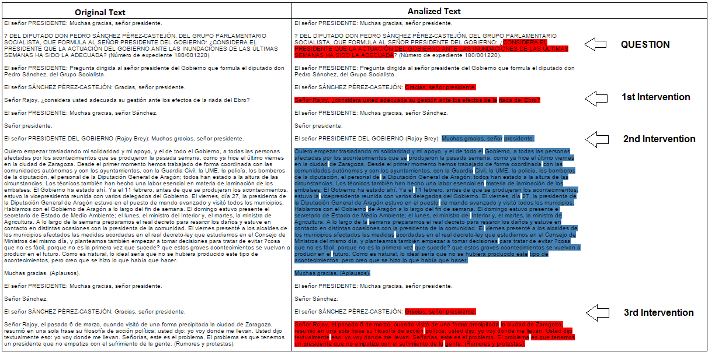
Finally, an example from a control session journal (HTML) labeled after going through the analysis process(when you put on a question or discussion a tooltip is shown with some of the information obtained during the analysis):
Testing
To detect errors in the extraction process we have developed tests that analyze results after extraction.
On one hand, it has been implemented a process that highlights the original documents (HTML) with colours selecting the extracts (each parliamentary group has an assigned colour). We have seen some examples in previous images. The result allows us to visually check the texts. In this sense, the charts PolitiLines and Words They Used also allow us to validate the consistency of the data.
Given the number of downloaded sessions control journals, it is not viable to use a visual review. Therefore, it has been developed a test that analyses the coherence of the information extracted looking for possible errors: Empty questions, unanswered questions, questions with too many discussions, empty interventions, questions or discussions which are not detected the deputy or parliamentary group that performs it...
How do we find the keywords of every speech?
Feature extraction and text clustering
The problem
After scraping the Congreso's and the CIS’ website, our next goal was to figure out how to connect these two worlds. The problem was that we wanted to build a bridge between the main topics coming from the Congreso’s documents and the main topics from the CIS website.
There are a lot of ways of tackling this problem. We tried some of them, but, eventually, we chose to extract top topics from Congreso’s documents and to build a model using the k-mean algorithm in order to cluster these documents using the CIS’ main topics as labels to these clusters (as many as we can!). Therefore, we could create, somehow, a dictionary between Congreso and CIS main topics. Next step was, to establish how to work out the metrics in order to compare these two worlds.
In the following paragraphs, we try to explain how we dealt with this problem step by step.
Defining what it is a "feature"
Since we were interested in the extraction of the main topics from our Corpus, we defined as a feature any n-gram keyword (a sequence of one or more words) within the Corpus.
We decided that it would be helpful for our purpose, to split the Corpus into smaller pieces to reduce the number of topics per document, where one piece consists of a single "question" and their "speeches". This is what we call a "document" in the following paragraphs.
We noticed that concepts, in general, are expressed by nouns, with or without adjectives, so, we focused on finding the way to extract nouns and adjectives from our documents.
How we extracted these features from the Corpus
We used an unsupervised algorithm called RAKE (Rapid Automatic Keyword Extraction) implemented in Python [1]. RAKE is very simple and has only one parameter. This parameter is a stop list and RAKE uses it to generate the co-occurrence graph formed by the candidate keywords.
At this point, we considered building a customized stop list instead of using a static stop list. At first, we dealt with this problem as if it were a NLP problem (Natural Language Processing), so we used a Spanish POS (Part-of-Speech) tagger to identify nouns and adjectives from our documents. So, we built stop lists as a list of all words except those identified as nouns and adjectives.
RAKE is also able to score the selected keywords. It works out the weight of each keyword as: deg(kw) / freq(kw)
Cleaning and filtering keywords
Before extracting keywords from each document, we used a dictionary [2] to find false positives single out by RAKE (just in case the POS tagger had failed).
While extracting and loading the keywords into the database (for what we used MongoDB) we discarded keywords with a RAKE's score below 1.0
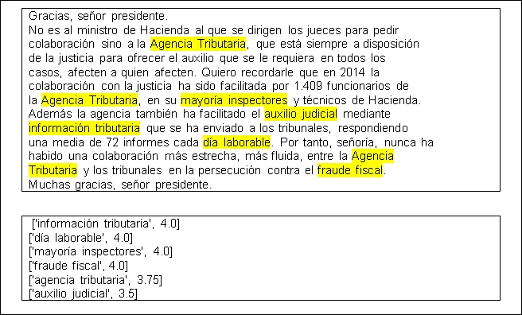
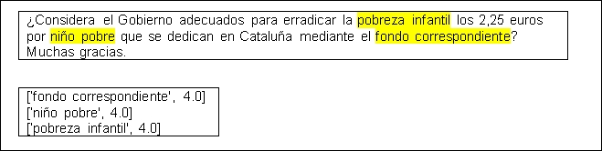
After the process of extracting and loading keywords, we discarded manually the keywords that were meaningless from our point of view.
Unsupervised approach: Clustering documents with k-Means
Before applying the k-means algorithm, we built the word-frequency matrix using the extracted keywords as a vocabulary (bag-of-the-words).
At the beginning we used the scikit-learn Python library to build the word-frequency matrix but we noticed that scikit-learn counted the words within a keyword as unigrams and this was not what we wanted to do, so we decided to count keywords using our own algorithm.
After that, we used scikit-learn library to transform this matrix into a sparse matrix (where the coefficients are calculated as “tfidf” weights).
Eventually, we applied the k-means algorithm using the "k-means++" initialization and executing it up to 10 times to deal with variance due to the random initialization of centroids. Initially, we chose k=20 in our first tries, where k is the number of fixed clusters.
Tuning parameters selection: Grid search method and Silhouette coefficients
After these first tries, we had no idea about the "k" value, so we tried some values in combination with different word-frequency thresholds. So, we dealt with two parameters: word-frequency and the number of clusters.
In order to find the best combination of these two values, we built a grid search algorithm to execute multiple combination, so as to evaluate the best of them. We worked out the Silhouette coefficients for each combination and it turned out that the outcomes were very close to zero, so the points were very close to each other.
Finally, we took k = 45 and tf = 25, where tf is the word-frequency threshold.
Semi-supervised approach: Classifying clusters with Stochastic Gradient Descent
Thanks to the k-means algorithm, we could visualize some clusters that were clearly identifiable with a topic extracted from the CIS. We managed to create a list of keywords affine with these topics in order to train a simple classifier. We used this classifier to label the rest of the clusters.
The list consisted of a dictionary of topics from CIS and keywords from the Congreso's Corpus. This work was performed by hand, checking clusters manually as cycle of try and error. This work helped us to decide what keywords matched better some concepts as: economy, employment, terrorism, housing, etc.
We used a Stochastic Gradient Descent (SGD) classifier to help our aim of labeling our clusters and therefore our documents. Unfortunately, we used a few documents to train the classifier because we were struggling with an unsupervised problem. However we managed to find important keywords from the most identifiable clusters to build a reliable classifier and label some clusters with enough accuracy.
During the clustering process, we found that most of the time a cluster bigger than the others. When we say “bigger” we mean, more than four sigma from the mean! So we considered splitting it up in smaller clusters and try to label them with our classifier in order to solve this problem. And this was, exactly what we finally did.
Building metric tables
After clustering every document, the final step was to craft a metric to relate documents with their importance in the Congreso.
We thought deeply about this problem, and in the end, we decided that we could use the number of lines of every document as a measure of the importance of a topic, since every document was tagged to a single topic.
We grouped and normalized our data by year and month. We found that some months had no data, so we applied linear interpolation to deal with these gaps. These months were: August, and those months between the change of legislature (four months approximately), we suppose politics need time to start again.
Model Validation
Although the problem has been solved by unsupervised methods, we have evaluated and measured the strength of our model which has turned out rather strong!
We performed a hundred times (N=100) our model which consists of a k-mean model (for k=45) and the process of clustering the largest cluster, if necessary. Our goal is to check if the process of labelling clusters is, at least, strong. We worked out the label of each model (experiment) and each document.
After finishing this process, we have computed the label most chosen among the 100 experiments. It turned out that most of the clusters have one label which is the most chosen among the others, so this result fulfilled our expectations of strength of our model.
We did the same for a model where k = 55 in order to check if different k values have influenced in the strength of the model. As we can see in the following pictures, there is not much difference between these two models (k=45 and k=55),and we even can see that our model (k=45) it is slightly better.
We want to know what happen if we change slightly the value of k in our model. Will these models label the same way? If we consider as a document's label its "most chosen" label after performing 100 times our model, we can work out if the two models behave similarly comparing the label of each document for each model. As we can see in the following picture, most of the documents are labeling the same way.
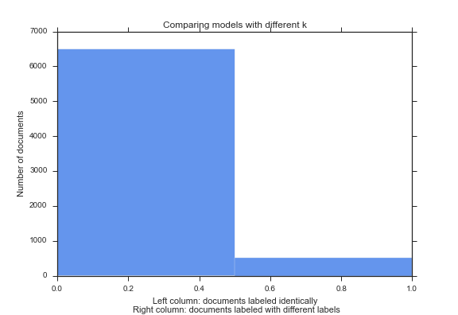
As we have seen, the two models label very similarly the documents, but, we want to visualize how many labelsthey use to label documents, and especially if there is a 'most chosen' label for each document. This can be seen in the following picture:
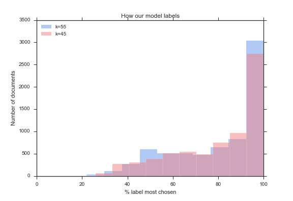
And finally, we show how many labels our experiment has used to label each document (after 100 times performed).
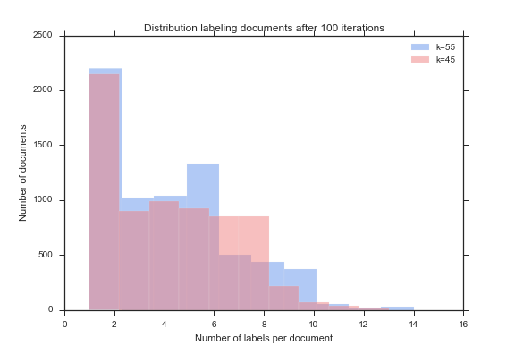
Miscellanea
During all this process, we tried some other approaches to tackle this problem, although eventually we discarded them.
Some of them were:
Topic model: Latent Dirichlet Analysis and Hierarchical Dirichlet Process as an alternative to k-Means algorithm TextRank algorithm as an alternative to RAKE algorithm Clustering a graph which is made up of keywords (the adjacency matrix of co-occurrence keywords). This approach gave us a small number of communities, so we decided to discard this interesting approach.
References:
The Charts
We can differentiate between 2 kinds of charts: those that compare the CIS with the Congress (The Radar, The Analysis and Topic Evolution) and those that are useful to have a deeper knowledge about what is debated in the Congress (PolitiLines and The Words They Used).
We have seen that on some months there is no data available (ie: holidays in the Congress, August for the CIS, elections or 11S). To solve the problem and create more dynamical charts sometimes we have decided to delete that month in the chart (as in the case of August in the Radar) or to create an interpolation of the previous and next month.
Finally, all the charts have some particularities that are explained on each website. Hope you enjoy the experience!